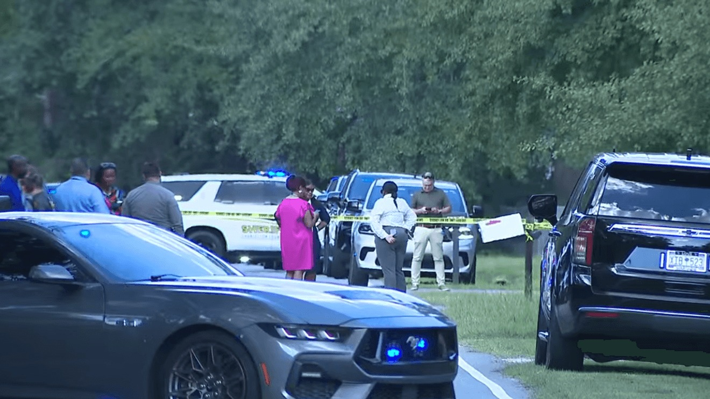

October 03, 2026
SC Mom Charged in Starvation Deaths of Daughters, 2 and 15 Months


WVLT composite — family photos + booking photo via Charleston County Sheriff's Office; scene photo: WCIV (Cameron Limes)
SC Mom Charged in Starvation Deaths of Daughters, 2 and 15 Months
The 911 caller noticed something small that wasn't small at all. A mother walking down her street — without her babies.
"I'm just concerned because she didn't have her kids, and nobody has seen her kids," the caller told Charleston County 911 on Tuesday morning. "She was walking down the road today, and she didn't have her babies, and that's not like her."
That call sent deputies to the 3200 block of Pinewood Drive in Ladson, South Carolina, around 1:15 p.m. Justine Marie May, 31, came out of the house crying and speaking incoherently, according to an affidavit obtained by WCIV. Inside, deputies found her two daughters — Emory Deacon, 2, and Harlow Deacon, 15 months old — "obviously deceased."
May told investigators she did not remember the last time she fed them or gave them something to drink. She told officers the last two weeks had been "a blur," and said she believed the girls died because they did not eat. The Charleston County coroner, Bobbi Jo O'Neal, determined both children died of starvation and dehydration due to neglect.
May has been charged with two counts of homicide by child abuse, which carries 20 years to life in South Carolina. She waived her bond hearing Wednesday and remains at the Sheriff Al Cannon Detention Center in North Charleston. Her next court appearance is set for November 20.
The warnings came for weeks
This is the part of the story that's going to haunt everyone who tried to sound the alarm.
May's relatives believed she was suffering from postpartum depression. In early September, a family member emailed her referencing the Lindsay Clancy murder trial in Massachusetts — fears, in writing, that something similar could happen.
"Lindsay Clancy is on trial right now for killing her 3 children!" the email read. "This has been the fresh hell your family has been living every day that you don't communicate or let us see the girls."
"Would Justine do this? No. Would this dark entity that is behind Justine's eyes do this? This haunts my worst nightmares," the relative wrote, according to the Post and Courier.
The girls' father, Zachary Deacon, was frantic. In texts May herself posted to Facebook, he wrote: "This is not harassment. I am genuinely terrified for the kids. Are you going to hurt one of the kids to get back at me?"
May dismissed it all. On September 9, she complained about the repeated welfare checks, writing that officers "found absolutely nothing wrong because I am an amazing mom."
Five visits. No signs noted.
The Charleston County Sheriff's Office confirms deputies made contact with May and the children twice in August and three times in September — visits that included coordination with the state Department of Social Services and the Department of Mental Health Mobile Crisis Unit. Officers' last visit while the children were still alive was September 20. Each time, deputies noted no obvious signs of concern.
Now the sheriff's Office of Professional Standards is conducting an internal review of the response. The South Carolina Law Enforcement Division's Special Victims Unit and the Department of Child Fatalities are assisting the investigation.
The girls' father's attorney, Gedney M. Howe IV, did not mince words: "We believe these deaths could and should have been prevented. Neighbors, friends, and family all called trying to get help for these girls, and no one listened. Zack was sounding the alarm and was arrested for it."
Deacon was himself arrested September 11 on a second-degree harassment charge after May alleged he continued contacting her — released on bond with a no-contact order.
Justine May is presumed innocent until proven guilty. The case remains under investigation.
Source: New York Post (affidavit via WCIV; reporting via WCSC/Gray News) — read the original report
← Back to latest stories